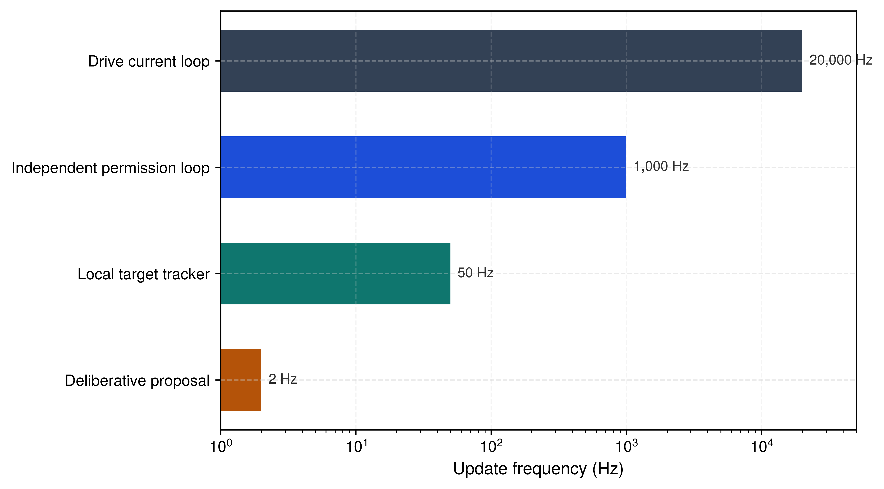

多速率节拍；该机器的意图模型运行速率快于所示的审议速率，而分块策略在此省略。">


自主目标必须携带什么，才能防止一个缓慢的推理模型将机器驱入一个已不复存在的情境？
诸如“取回托盘”这样的高层语义指令，规定了期望的结果，却将关键的物理参数——轨迹、接触力与时间边界——完全留作未决。 由于物理场景在大型推理或视觉语言模型进行推理时持续演化，原始模型输出无法不经物理锚定而直接执行。 一个在 审议式推理 开始时可达的目标，其通路可能在执行开始之前完全被阻塞，即使该模型的高层任务分解在逻辑上毫无瑕疵。
经物理锚定的意图 将抽象指令转换为受显式租约、空间容差和硬性截止时间约束的物理可执行区域。 当环境租约到期或目标漂出认证边界时，安全减速不能等待高延迟的 审议式循环 来确认超时。 实时执行层必须独立撤销运动授权并执行有保障的兜底动作。 在物理 AI 栈中，意图将 Brain 的语义目标桥接到 Body 的物理极限，为确定性的 Nervous System 授予有界的租约；若租约未被续期，该租约会安全到期。
当仓库移动操作臂被要求“从出料输送带取红色马克杯”时，该指令规定了结果，但路径、力和截止时间均未确定。 电机逆变器接受的是电气指令，而非语言。 视觉—语言—动作（VLA）模型(Brohan, Brown, Carbajal, Chebotar, Dabis, 等 2023年; Brohan, Brown, Carbajal, Chebotar, Chen, 等 2023年)可以提出动作或目标，但其更新频率取决于模型与硬件，可能比本地控制慢得多。 若目标在推理过程中移动，过期的提议可能消耗净空。 因此，系统需要带时间戳的几何证据、有界请求，以及一条能够撤销授权的独立许可路径，即使模型处于静默状态。
↰ 前置条件： 租约所消耗的信念记录（证据纪元、初始误差、增长规律）在 空间状态模式 中定义。
记忆可以提供带有失效期的空间信念（遮挡下的信念）；但它无法决定该信念授权采取什么动作。意图 通过连接高层任务语义与有界的物理目标来弥合这一缺口。 它在轨迹规划器（轨迹规划）构造出用于抵达该目标的连续运动剖面之前，先指定一个可采纳的、有时间界的目标。
将词语连接到物理目标，是机器人学中 Harnad 所称的符号锚定问题 (Harnad 1990年) 的形式：计算系统内的纯符号或语言词元，除非在非符号性的、感知运动交互中因果性地锚定于物理环境，否则不具有内在的物理意义。1 而早期的人工智能系统，如 Winograd 的 SHRDLU (Winograd 1972年)，运行于封闭世界的积木世界领域，其几何是合成的、解析的；2 现代物理人工智能系统则必须将开放词表的指令锚定于连续、动态且存在不确定性的物理空间。3
意图锚定拒绝 是指具身系统明确拒绝语义歧义的自然语言指令、返回类型化失败状态（ERR_GROUNDING_AMBIGUITY）而非执行跨越物理净空裕量的未锚定的最大似然猜测的准入规则。
无论模型提出什么，都必须同时保持在时间上有界。图 1 给出了一个时间表，其中慢速审议式模型、局部跟踪器、许可循环和驱动以不同的速率运行。 传送带目标的相关证据会在几十毫秒内过期，而模型每几百毫秒更新一次，无法为其续期，因此需要一条独立的、经验证的本地观测路径，或者暂停任务。 图中所示的速率仅为示意，节 1.4 则将机器自身的意图节奏与传送带的时间窗口相对照。
多速率节拍；该机器的意图模型运行速率快于所示的审议速率，而分块策略在此省略。">

↰ 前置条件： 提案边界和权限路径定义在 《五层机器》。
因此，对一个开放式指令的落地，最终归结为一个带日期的 意图提案，由应用处理器经由提案边界发出。 它请求空间、时间与控制作用量的边界，而独立的授权路径在运动开始之前，将请求的每一项边界与已配置的限值、当前状态和停止余量逐一比对。
当机械臂伸向那只红色马克杯时，Brain 不会经由提案边界发出任何关节轨迹或绕组电压。 它发出的是一份对有限授权的请求，而授权路径必须在授予其中任何一部分之前，能够核查其每一部分。 检查项包括目标容差、证据有效性、请求的控制作用量以及可行的回退方案，每一项之所以存在，是因为延迟的提案可能以不同方式失败。节 1.7 指承载请求及其信念记录谱系的记录。
在物理操作场景中，孤立的坐标是不完整的。 在吉布森（Gibson）的意义上，可供性（affordance）是几何、机器人可达范围与接触限制之间相对于具体动作而成立的关系(Gibson 1979年)。 因此，意图（intent）提案要求给出 \(SE(3)\) 中的目标位姿，即三维位置与姿态的空间，以及 任务容差区域，在该区域内任务即视为完成。 该容差不同于估计器的协方差，后者描述的是关于目标的不确定性。 对于机器抓取杯子这一任务，获批的任务剖面允许 15 mm 的平移误差。 控制器随后可以在该区域内终止，而不是永远积分以趋近一个精确的含噪点；它仍然会检查估计出的目标误差是否落在容差之内。
物理世界中的空间有效性是暂时的。 因此，一个物理目标带有证据基准时刻，以及一个有限的请求失效时间，而不是依赖推理层发出的异步取消消息4。 一个每个周期只产生一次新结果的模型，即使不考虑抖动，也无法更新其证据有效期短于该周期的目标。 独立的许可控制器在每个控制周期评估已接受的截止时间，并在证据或租约过期时丢弃跟踪。 它仅在测量到的状态和剩余净空距离使得该响应可行时才选择配置的保持或停止5；本地计时器消除了对主机中止包（abort packet）的依赖，而制动距离仍然是一项独立的物理义务。
在空间和时间上受到约束的目标，若允许控制器施加不受限制的物理作用，则是危险的。 因此，本意图提案请求对速度、加速度和接触力及力矩分别设定物理作用上限。 模型可能因立体视觉视差误差，将目标置于其必须接触的表面稍后方；此时刚硬的位姿控制器会指令过大的恢复扭矩。 针对机械臂向弹簧闩锁笼门的受保护接近运动，该提案可能以 15 N 触发线作为其接触力上限，远低于 100 N 闩锁限值，并以 0.03 m/s 接近速度作为其速度上限。 许可路径将每项请求与各自独立配置的执行器上限和任务上限逐一比较，随后仅接纳其中可行的子集。 低层 阻抗控制器6 强制施加上述已接纳的限值。
省略这三项限值中的任何一项，都会使机器在通信中断或感知停滞期间处于暴露状态。 制动距离随制动前的延迟时间线性增长，随速度平方增长 (equation)。 在移动基座上，其制动预算是一个距离；提议者停滞时，其最后一次提议仍具权威性的时间会使延迟项变长。 这段时间是 多速率节拍 的 chunk 租期，并计入 \(\tau_{\text{delay}}\)。 只有当独立校验的障碍物边界位于制动距离之外，并加上模型与感知余量后，净空才成立。
意图租期是一个不同的对象。 它界定目标被支撑的时间长度，其到期会立即撤销目标并终止跟踪，而无需向基座的制动预算增加任何项。
以下三个模型回答不同的问题。 停止计算需要制动起始的总延迟，以及从 当前 状态可用的减速度。
这三个例子阐明了控制权的划分。 高层推理可以提出目标、时间窗口和努力上限。 独立的许可路径决定哪些限制是可接受的，其依据包括实测状态、配置的上限和可行的回退方案。 本地控制随后仅跟踪一条已获准的建议，并在证据无效或过期时撤回授权。 这与包容架构7 (Brooks 1986年) 的优先级分离相类似。
将意图提议锚定到这三个界限中，需要一种形式化变换，将模糊的感觉输入转换为结构化、可验证的提议。 当系统处理一个高层指令或一串视觉词元时，最初的提议很少是一个单一的、无歧义的一组坐标。 它最初是一个不确定的几何假设，必须自带其空间歧义性和其时间限制，才能被接纳进执行流水线。
当一条未经验证的语义假设驱动运动时，自然语言指令便具有危险性。 当操作员或高层监督者要求取红色马克杯时，机载视觉语言模型解析字符流，将图像特征投影到共享嵌入空间中，并选取一个候选视觉边界框区域。 从这些像素中，网络在 \(SE(3)\) 中提取估计位姿，并将坐标值写入内存缓冲区。 在提议边界（《五层机器》），一串无依据的词元成为请求的目的地；若获准，它将以质量、速度和电流的形式到达因果边界。8
如果视觉主干网络将语言词元与相邻夹具或未标注的标定目标关联起来，则所得的坐标向量 \(\mathbf{p} \in \mathbb{R}^3\) 作为权威物理目标进入轨迹管线。 由于低层电机驱动仅测量编码器脉冲、绕组温度和相电流，它无法评估所跟踪的坐标是否对应于预期的马克杯，还是对应于一段空皮带。9 语义落地过程必须在任何运动规划器接受它之前，产生一个显式的几何提议，其中包含空间不确定性、选择证据和时间失效。
开放词表可供性语义落地 使用语言与传感器观测来提出与任务相关的技能、空间场或程序，其输出无一为已验证的目标。 SayCan (Ahn 等 2023年) 将语言模型的偏好乘以学习得到的每个技能的成功率估计值（Value Functions and Affordance Grounding），由此得到的排序取决于训练与观测，而非对受阻或不可行运动施加否决。 VoxPoser (Huang 等 2023年)（图 2）由语言模型生成代码，在工作空间中组合出 3D 吸引与排斥值图，供轨迹优化器作为代价使用；而代价场上的梯度既不能证明无碰撞，也不能证明力矩限制。 Code as Policies (Liang 等 2023年) 生成调用感知 API 与参数化运动原语的程序，且生成程序与模型同样可能停滞，因此倒计时与许可路径无论程序如何运行都保持控制。 OK-Robot（图 3）依据语言条件化的物体选择来筛选候选抓取，而此类选择背后的分割掩膜只是候选图像区域，并非已验证的 3D 外壳。表 1 说明了每种表示分别向下游发送什么，以及许可路径在它们中的任何一种成为被接纳的请求之前仍需什么。 每一种都至少需要命名坐标系、SI 单位、带日期的证据，以及许可路径自身的检查。
| 方案来源 | 下游接收的表示 | 早期检查 | 仍需补充的证据 |
|---|---|---|---|
| 二维方框或掩膜 | 图像区域，以及测得的深度与相机标定 | 拒绝缺失深度或位于已验证区域之外的目标 | 三维位姿误差、遮挡、物体身份与扫掠路径净空 |
| 三维特征或数值场 | 明确指定的坐标系中的候选目标或代价场 | 拒绝工作空间之外的目标与过期地图单元 | 保守占据、未知空间策略、执行器与时序约束 |
| 动作令牌 VLA | 解码动作处于其训练动作范围内 | 拒绝越界或不符合准入条件的提议 | 状态相关的物理限制与独立的许可；词元分箱不提供几何净空证明 |
| 语言选定的技能 | 带估计成功率的技能标识符 | 对低置信度候选项进行排序或拒绝 | 当前前置条件、路径可行性，以及独立的物理约束强制落实机制 |
离散化输出不携带任何度量约束，两种常见类型缺乏该约束的原因各不相同。 RT-1 (Brohan, Brown, Carbajal, Chebotar, Dabis, 等 2023年) 与 OpenVLA (Kim 等 2024年) 将每个机器人动作维度在训练得到的范围内量化为 256 个分箱，因此一个解码出的分箱即代表一个动作，且不编码到任何目标的净空余量。 PaliGemma 的位置词元 对归一化后的图像坐标进行量化，只有在具备测量深度、标定链以及误差模型的情况下，这些坐标才构成基准坐标系下的位姿；其中外参误差项与深度误差项可能超过量化误差本身。
为防止学到的输出伪装成确定性设定值，生产者必须保留参照物身份以及选定该参照物的带时间戳证据。 其观测记录可能包含边界框、注意力权重、类别概率，以及保留完整方向信息的协方差估计。 意图提案（节 1.7）依据摘要与证据纪元，关联到由该观测构建的信念记录（空间状态模式）；它携带候选位姿、保守的基座标系误差界、任务容差与请求有效期，而非这些完整的生产者侧字段。 独立的许可路径会依据自身的限幅，检查所关联的证据与请求。 物体可能在相机曝光之后发生位移或被遮挡，因此没有有效证据链接与有效期的坐标，无法继续作为授权目标。
当视觉语言模型看到多个候选物体时，取使目标值最大的候选项（argmax）可能掩盖一个尚未解决的抉择。 数字推荐仍然可能误导用户，但它没有直接的执行器通路；而在机器人中，一个被采纳的空间提案可以驱动质量运动。 若一只红色玻璃罐放在取餐传送带上红色马克杯旁边，一个缺乏充分感知与指代依据的猜测可能选中玻璃罐。 系统应保留候选身份与校准后的不确定性，当超过针对特定任务的歧义阈值时拒绝该提议。 许可路径随后在生成方寻求更清晰的观察或指令时，维持可行的保持或停止。
形式化地，开放词表语义落地歧义 是指多模态特征投影产生多峰后验分布、重叠的几何假设，或候选物理指代之间无法裁决的证据性平局，此时需要显式的指代拒绝（ERR_GROUNDING_AMBIGUITY），而非乐观的 argmax 平局裁决。 候选指代分布 \(\mathbf{z}\)、\(H(\mathbf{z}) > H_{\text{thresh}}\) 上的高熵是其中的一个信号，而生成侧的 图 4 过滤器可依据该信号在提议越过提议边界之前予以拒绝。 每个提议都必须满足的检验，是对 抓取窗口（节 1.6）内候选项的独立计数，因为一个自信却错误的模型也可能报告低熵。
考虑指称落地模型对红色马克杯把手的估计，该估计来自一次远距离拍摄的单一手腕相机视角，发生在手臂开始接近之前。 在一个示意性的标定高斯定位模型中，传感器坐标系下各主轴方向的标准差分别为 4 mm、5 mm 和 12 mm，其中最大者沿相机的深度轴，该轴同时也是夹爪的接近轴。 围绕估计的把手位置 \(\mathbf{p}_0\) 的 95% 统计区域 使用马氏平方距离 \((\mathbf{p}-\mathbf{p}_0)^T\mathbf{\Sigma}^{-1}(\mathbf{p}-\mathbf{p}_0)\le\chi^2_{3,0.95}\)，其中三自由度分位数是 7.815，由此得到主半轴 11.2 mm、14.0 mm 和 33.5 mm。图 5 将该不确定目标与马克杯的 15 mm 抓取容差进行比较。 两个侧向半轴均落在容差之内，但深度半轴没有，因此该估计未能通过准入，需要更好的感知、不同的接近方式，或拒绝。
在 节 1.7 中获准的抓取基于更好的感知。 其信念记录 (空间状态模式) 来自接近过程中更近的手腕相机捕获，该捕获将初始误差限定在 3 mm。 即便该承认的估计的 95% 区间仍残留尾部，也无法单独确证物理净空，因此该意图提案采用保守的基座标系误差界，而非声称编码该协方差。
带有较大不确定性估计的检测，可以被配置好的统计门限拒绝。 然而，对错误物理实体的自信定位可能通过该门限。 假设有薄壁玻璃罐单独到达，本应放置杯子的位置，且视觉语言模型在被问及红色杯子时为其赋予高置信度分数。 模型会发出一个尖锐的、低方差几何提议，并以玻璃为中心。 轨迹规划器接收该坐标，计算 \(SE(3)\) 逆运动学解，验证关节限位，并确认该路径在静态环境地图中避开了所有障碍物。 许可路径可能在其配置的几何与力边界内找到该提议的运动。 若这些边界允许陶瓷杯所需的握持力，则一条平滑且几何上有效的轨迹可以压碎玻璃，尽管它通过了各项检查。
这一失败揭示了许可路径能够验证的内容与它必须作为未经验证的前提接受的内容之间的界限。 许可路径会针对已知占用栅格检查坐标边界、运动学可达性、关节力矩限制以及几何碰撞。 这些物理检查并不能确立该坐标所指向的物体就是目标物体，因此“被握持的物体即命名物体”这一前提超出了许可路径的验证范围。 它需要独立的任务证据，并会随杯子进入释放情形（release case）的交接分支（完整展开的一个案例），以及进入机器证据仍未能确证的主张登记（残余主张登记表）。
多模态特征提取、跨注意力对齐和开放词表短语指称落地属于计算机视觉与语言文献 (Kamath 等 2021年; Gu 等 2022年; Radford 等 2021年; Liu 等 2023年)。 物理人工智能架构使用这些指称落地模型，但其安全性不依赖于这些模型的内部激活；即便经过过滤的提议流，仍需独立的运动许可检查。 AutoRT 的语言模型任务过滤器提高了可接受提议任务的比例，但仍会放行一小部分不安全任务，其部署依赖基于关节力的暂停、紧急停止和人类监督，而非提示 (1.1) (Ahn 等 2024年)。
证据：在 259 个提议任务中有标签的样本中，228 个最初被判定为可接受。 经过 LLM 可供性筛选后，214 个保留任务中有 200 个可接受，可接受比例由约 88% 提高到 93%，但仍留下一些不合适的任务。 该论文明确指出，宪法式提示无法保证合规。
响应: 报告的实施部署在提示之外补充了基于关节力的暂停、物理紧急停止，以及除非作业区域已设置隔离栏，否则由人工视线监督。 这些是覆盖范围不同的独立控制措施；提示本身并非经过认证的几何或物理安全监督器。
系统层面的启示: 学习得到的任务筛选器可以改进提议流，但一条独立的授权与回退路径仍须验证每个物理动作在其声明的运行区域内是否可执行。
无论其来源如何，一个有依据的目标同时也是对某个时刻的断言。 模型在相机采集时正确选中的那只红色马克杯会随传送带继续移动，因此，一个在发出时正确的提议会在内容未作任何更改的情况下变成错误。 因此，它必须携带一个权限路径能够在没有模型的情况下强制执行的截止时间。
假设应用处理器在机械臂伸向红色马克杯时卡住了。 导致取消成为必要的故障，正是阻止取消被发出的那个故障，因为显式中止需要一个可用的发送方、调度器和通信路径。 意图租约必须自行到期。 这是将原则 Proposal is not permission 应用于一个目标。 许可路径拥有一条可在提议者缺席时执行的兜底路径，因此独立的倒计时会撤回停滞提议的跟踪权限，而无需等待模型。 这借鉴了 Gray 和 Cheriton (1989年) 的租约原语，并将其适配为物理控制器：到期会触发一条经过独立验证的兜底路径，其在到达危险位置之前能够停止的能力取决于当前状态、净空条件、执行器权限以及总响应延迟。10
↰ 前置条件：动量预算与制动距离约束源自 与 机械动量。
目标证据的截止时间，取决于物理目标从其最后一次测量发散的速度。 假设在信念记录所声明的有效区域内，已验证的边界将相对目标漂移限制在 \(v_{\text{drift}}\)、初始位置误差限制在 \(e_0\) 之内，且任务允许的目标误差为 \(r_{\text{tol}}\)。 随后，将 equation 施加于 equation，并结合 \(a_{\text{dist}}=0\)，用 \(e_0\) 代替 \(E_0\)、用 \(r_{\text{tol}}\) 代替 \(E_{\max}\)： \[\tau_{\text{ev}} \le \frac{r_{\text{tol}} - e_0}{v_{\text{drift}}} \tag{1}\]
当 \(r_{\text{tol}}\le e_0\) 时，目标在捕获时不可接受。 控制器拒绝依赖运动。 即使 公式 1 给出正的时域，仍需一次独立的运动许可检查，以当前净空度对照总感知时间、许可时间、通信延迟与制动启动延迟再加上物理制动距离，如 神经系统 所示。
若同样需要已验证的扰动加速度上界 \(a_{\text{dist}}\)，则 equation 的二次项返回，其在 \(r_{\text{tol}}\) 处的正根会缩短证据时域。
对于传送带上的红色杯子，指称落地目标以 0.20 m/s 的速度运动。 抓取容差 15 mm 与初始误差 3 mm 共同留下 60 ms 的 目标证据时域，至 公式 1。 将时域拉伸到机器 5 Hz 意图模型的 200 ms 刷新周期，会使建模目标误差达到 43 mm，即 28 mm 超出容差。 意图模型单独推理一次就需要 160 ms，因此它自身无法为连续运动刷新 60 ms 目标。 若无合格的追踪器，传送带必须减速或暂停，否则任务必须被拒绝。 在 20 mm/s 漂移时，同样的界限给出 600 ms 证据视界（图 6）。
合格的局部跟踪器会改变算术关系。 它逐帧重新测量杯子，并跟随传送带的速度，因此传送带速度不再驱动误差。 同样的初始误差 3 mm 仍计入容差，从而留下 12 mm 供残差打滑 0.50 m/s² 消耗。 面对该预算，残差打滑单独决定 供给、新鲜度与内存墙 所求解的跟踪证据时域 219 ms。 跟踪器以自身速率更新该证据，因此必须使跟踪器的周期加延迟适配于该时域。 意图模型仅重新确认指的是哪只杯子，而它每次发出的更新都携带跟踪器的新鲜证据，而非模型上次读取的帧。 适用的证据时域限定了该目标的意图租约上限（节 1.7）。
将目标证据有效性耦合到推理模型的节奏会引入漂移风险。 假设某设计将杯子的证据绑定到意图模型的输出而非跟踪器，于是适用未跟踪的 60 ms 时域，且单次推理运行至高尾延迟 650 ms。 仅将目标记录延长至 650 ms 以掩盖该延迟，会使该记录的估计值超出所声明的误差包络，持续时间为 590 ms。 60 ms 限值是证据有效性截止时间，只有再次与运动核对的新证据才能延长它；更快的计算不能。
连续跟踪需要新的物理证据，而不仅仅是来自同一陈旧帧的新数据包。 基于新捕获的续期必须在当前证据与许可权威过期之前到达，其预算需包含捕获、处理、传输、时钟不确定性与许可时间。 简单的条件\(T_{\text{period}}+t_{\text{latency}}<\tau_{\text{ev}}\) 仅是一项必要的调度检查。 当新的新鲜提议到达时，规划器可能根据测量状态计算一个加加速度受限的拼接。 只有当扫掠路径、新证据与制动余量均保持可行时，才接受该拼接；而目标突变则可能需要拒绝或执行经检查的停车。
当 MCU 在许可时启动的倒计时耗尽时，无论主机是否仍在运行，独立控制器都会撤回该提议的权威，并为测量载荷与接触模式选择先前已验证的响应。 保持活动位置需要扭矩，并可能保护悬挂载荷；受控减速需要制动能力与净空；禁用扭矩对某些驱动器可能适用，但可能释放载荷或使动量处于不受控状态。 提议方可以请求某种模式，但不能为 MCU 选择终端动作。 当从当前状态已无可行的响应时，准入即失败。
安全执行即将到期的租约，前提是所指令的几何提议确实可由物理本体实现。 若提议的坐标超出运动学可达范围，或在租约窗口内要求超过执行器极限的关节角速度，则授予该租约会浪费控制权限，并可能因电机为达到不可能的速度而吸取过量电流而触发驱动器过流保护。 确定某个目标是否运动学上、动力学上可准入，应在轨迹生成器接受租约之前完成，从而在高层意图与运动执行之间建立一道物理过滤。
若红色马克杯在传送带的远侧经过，且距离基座停放位置超出手臂可及范围，则任何关节力矩序列都无法将 夹爪 送达其手柄。 该不可能性应在提案边界处被捕获，早于目标进入轨迹优化队列。 当上游视觉语言模型或神经策略输出一个坐标时，将该提案视为未经验证的候选，可保护实时运动管线免执行甚至免评估不可能的运动。 运动学工作区分析源自经典公式 (Craig 2005年; Lynch 和 Park 2017年)，根据连杆尺寸、关节范围限制和安装几何，定义了可达末端执行器构型构成的闭空间流形（即机械臂可达的物理 3D 体积）11；解析可达性检查评估目标\(SE(3)\)位姿\(\mathbf{p}_{\text{target}}\)是否位于该工作区流形\(\mathcal{W}\)内，而占用性检查则确认目标的包围体积不与已知持久障碍物相交，二者均足够廉价，可在轨迹优化@fig-10-lease-dynamics-tradeoff（面板 b）之前运行。 将超出可达范围的目标传入轨迹优化器，会迫使求解器在空解空间中搜索，把几何上的不可能转化为计算上的失败。 通过这些廉价测试是必要的，但永远不充分，因为关节朝向、扫掠障碍物、力矩、热状态、未知空间以及停止余量仍然需要一条经过检查的路径和一个许可决策。
↳ 下游： 可容许的目标区域为样条生成指定边界条件。连续轨迹
静态工作区内的目标，仍可能在其证据保持有效的时间内够不到。动态可达性是指，末端执行器能够在剩余窗口\(t_{\text{exp}} - t_{\text{now}}\)内，在遵守其速度、加速度、加加速度和热扭矩限制的前提下，从测量状态\((\mathbf{p}_0, \mathbf{v}_0)\)移动到目标位姿。 无论执行器遵循何种轨迹，任何动作完成距离 \(d\) 所需的时间都不可能短于其速度上限所决定的最短时间，因此准入至少需要 \[\frac{d}{v_{\max}} \le t_{\text{exp}} - t_{\text{now}}.\] 加速度和加加速度限制只会延长行程，所以不满足该不等式的方案会失败所有更严格的测试。Kinematic Reachability and Intent Envelopes 推导了这些限制所产生的三角形、梯形和加加速度受限速度曲线。
在机械臂上，在合格跟踪器下，杯子的证据保持有效时间为219 ms，而工具中心点速度上限为1 m/s，抓取器在该窗口内最多移动219 mm。 以柄部为目标的抓取方案在抓取器距杯柄300 mm时发出，需要至少300 ms的行程，因此 MCU 在求解任何路径之前，以ERR_DYNAMIC_TIME_INSUFFICIENT将其拒绝。 没有跟踪器时，窗口缩短为60 ms，可达距离缩短为60 mm，因此未跟踪的抓取只能闭合接近动作的最后几厘米。 仅通过该不等式允许完整路径、扭矩与制动检查。
该界限及其背后的完整检查建立在导入的刚体力学之上，并基于三项假设：执行器扭矩-转速曲线保持在标称热额定值范围内、关节编码器准确报告初始状态 \((\mathbf{p}_0, \mathbf{v}_0)\)、负载质量与执行器极限背后的惯性模型一致。 一种代表性的许可路径实现会按照由被控对象与传感器预算选定的速率，监测关节电流 、电机温度 与通信延迟 。 这些观测可以检测模型的一些偏离，但无法在每个时间步上验证每一项假设，例如负载惯性。
若电机绕组温度超过 热工作占空比 的热阈值，许可路径施加热降额 ，下调参数注册表中的最大允许加速度（\(a_{\max}\)）与速度（\(v_{\max}\)）。 一项指示载荷质量偏差的外部力测量会下调同样的限值。 意图过滤器随即依据这些降低后的物理限值评估后续入站许可。 降额事件可能使先前已受理的路径变得不可行；控制器必须重新检查该路径，并在裕度丧失时选择可行的回退路径。
当可达性过滤器拒绝一条意图提案时，它不得简单地丢弃该数据包。 无反馈地丢弃会使上游推理模型无法知晓运动为何未能发生，迫使其等待端到端任务超时。 意图过滤器生成一份即时的结构化诊断包，直接返回到推理层，跨越提案边界。 该诊断载荷包含拒绝分类，例如运动学工作空间违规（ERR_WORKSPACE_OUT_OF_BOUNDS）、动态时间不足（ERR_DYNAMIC_TIME_INSUFFICIENT）或扫掠体积碰撞交叠（ERR_OCCUPANCY_BLOCKED），以及失效的数值余量。 对于动态可达性失败，反馈返回剩余窗口相对于移动所需时间下界的不足量，以及在规定租约内沿指令向量可达的最大距离。 对于静态工作空间违规，反馈提供目标点在 \(\mathcal{W}\) 边界上的投影（机械臂实际能够到达的最近物理点）。 推理层利用这一结构化信号，在随后的推理周期中调整其提案，具体方式为获取更新鲜的证据、选择替代方案、减速或暂停过程，或提出基座重新部署。 它无法在没有新的正当理由的情况下延长证据视界。
可达性滤波器会移除机械臂无法到达的目标，或无法在时限内到达的目标，并将完整运动交由规划器和许可路径处理。
当视觉语言模型为物理操作臂输出一个\(SE(3)\)目标位姿时，该位姿可能以几种不同的方式失效。 它可能是一个由反射背景纹理上的视觉注意力模式生成的幻觉目标。 它可能是一个陈旧目标，代表一个人类同事在相机管线缓冲帧期间刚刚碰动或移位的物体。 它可能是一种参考歧义，即模型在传送带上并排放置的两个相同的红色马克杯之间任意选取其中一个，而未解决任务要求的是哪一个。 或者，它可能源于分布外场景变化，例如光学镜头上的意外光照或灰尘，从而降低网络的空间预测精度。 尽管成因不同，这些失败仍以相同的形式出现在下游。
规划器接收的是带日期的目标提案，而不是执行器指令。 空位上的位姿可能导致徒劳的抓取；被占用夹具内的位姿则可能在后续路径与权限检查失败时导致接触。 在错误物体这一情形中，相比之下，几何可能是有效的，而所选物体在语义上是错误的。 因此，独立的权限路径只检查它能够测量的内容（新鲜度、覆盖范围、几何、当前状态与执行器限制），而不声称验证任务的意义。
一次全新的深度观察可以否决一个提议的抓取，若其所需物体证据在已覆盖的可见区域内缺失。 遮挡或未观察区域内的无返回，使该区域保持未知。 针对任务的歧义测试会在每个提议上运行，无论其置信度高低，因为高分只描述模型的确定性，无法表明没有任何第二个候选者共享该取用窗口。 该测试会拒绝含有两个候选者的窗口，并将该物品转交给同事进行人工取用。 许可路径会在提议边界上许可路径自身所在的一侧运行它，即作为 图 6（图 b）的歧义门；它基于语义落地模型并不产生的证据；生产者的熵过滤器可以更早地拒绝，但无法替代它。
表 2 依据能够捕捉这些失败的检查将它们分组，并加入两条模型输出在接触或时序暴露它们之前无法揭示的失败（一个被错误分类的可供性，以及一个在其窗口内无法到达的目标），同时把准入检查与运动或接触开始之后的响应分开。 在 1.1 的笼门闩锁处，2 ms 的接触回路响应在制动指令开始时已产生 39 N 的接触力，峰值随后出现；因此，接触前速度与力限制、执行器响应、柔顺性以及可用间隙决定完整接触轨迹是否保持在已验证的接触限值内。
| 失效模式 | 证据或检查 | 准入或响应 | 待验证的物理限值 |
|---|---|---|---|
| 幽灵目标： 空域图像伪影 | 新鲜深度证据与目标区域占据度，并检查覆盖与遮挡 | 当所需物体证据缺失时拒绝该提议；若区域未知则请求另一视角 | 仅当提议尚未被接纳时，拒绝才先于运动发生 缺失的返回信号本身并不能证明空间为空 |
| 陈旧目标:工件在捕获后发生移动 | 转换后的捕获时间、有界的时钟误差、局部跟踪与目标误差包络 | 证据有效性限值不再满足时撤销依赖于该证据的跟踪，选用已验证的备用方案 | 检测、通信、执行和制动的总延迟所造成的运动距离必须容纳在实测净空内 |
| 语义歧义: 拣选窗口内存在两个候选物体 | 基于新的深度证据独立统计拣选窗口内的候选物体数量；将模型熵作为更早的产方侧信号 | 拒绝放行，并将该物品转交同事人工拣选 | 单个错误物体可以通过计数检查，且自信模型可能报告低熵；因此独立的物理检查仍然必要。 |
| 被错误分类的可供性： 被选为可抓取对象的螺栓固定件 | 接触后的力与运动残差；尽可能进行接触前的任务/几何检查 | 先限制接触前的速度与力，然后在阈值穿越时调用已验证的接触响应 | 反应式触发不会限制首次撞击峰值；需检验完整力曲线、响应延迟与制动能量。 |
| 动态不可达： 目标无法在其有效窗口内被到达 | 速度上限约束下的移动时间下界，随后进行完整路径与制动检查 | 拒绝其下界超出剩余证据窗口的提案 | 通过下界既不能证明无碰撞运动，也不能证明可停。 |
因此，该表的每一行都要求提案以许可路径可在无模型情况下检查的形式携带其空间边界、证据来源及其失效时间。 被拒绝的提案将理由返回给学习层；获准的提案仍随被控对象运动接受独立的许可检查。 该提案将这些字段跨越提案边界传递，而从它获得许可路径所授予的记录即为意图租约。
意图租约的谱系源自记忆。 其父记录是 空间状态模式 的信念记录，以摘要命名；该记录的证据时间点转换到 MCU 时钟后，即成为租约的证据时间。 租约本身携带目标区域、误差包络与任务容差、请求的力与力矩、请求的终端模式、证据有效时间范围，以及到期时刻。 就 多速率节拍 而言，它是一份租约，此处针对目标；请求该租约的提案以意图载荷替代分块，在提案头下传输。 一个获准接纳的意图授予目标与力、力矩等物理作用量的上限，而从未给出路径。
↳ 字节布局： 意图载荷的字段、类型与偏移量见 Intent payload。
在运行中的机器上，提案以固定大小、静态解析的消息经由有界共享邮箱从应用处理器传送到 MCU，12 因此其解析耗时可与控制截止时间相比较。 该消息仅承载请求；独立的权限控制器掌握已配置的力上限、截止时间上限与状态依赖的兜底策略。
节 1.3 处杯柄估计的协方差椭球是生产侧的定位估计。 该提案并未尝试编码一般的定向 \(3\times3\) 协方差；其边界在指定的机器人基座坐标系中承载三个保守的 位置误差包络 \((e_x,e_y,e_z)\) 与三个请求的 任务容差 \((r_x,r_y,r_z)\)。 包络与容差保留了 节 1.2 中划分的区别，因此准入要求每个轴上的 \(0\le e_i\le r_i\)。 生产侧必须为任何由协方差到包络的转换提供依据，包括标定偏差与声明的尾部风险。 取向容差与接触模式规则来自独立批准的任务画像；该提案仅携带目标取向本身。
该提案的证据时间是 信念记录 的证据时刻，而非其估计时刻，并依据 多速率节拍 的时钟规则转换为 MCU 时钟。 MCU 将父摘要与该证据时刻同时匹配到一条保留的信念记录，并把该映射的误差界加入其时效性检验。 所请求的失效时间使用同一时钟，因此 MCU 能够将其直接与界定它的证据和停止时限直接比较。 在 多速率节拍 的完整性策略下，父摘要属于 谱系，而非消息认证。 它并不证明是谁选择了目标、约束或所请求的终止模式；由于权限路径依据内容而非来源放行，意图提案也不带密钥标签。
被接纳的意图在以下状态间转换： Pending、Active、Renewed、Expired 和 Aborted 状态。 MCU 只有在将请求与独立配置的天花板以及由实测状态得出的可行响应都核对之后，才进入 Active 状态。 续期需要一个更新的序列标识、一份新的信念记录，以及一次新的权限检查；它并不会自动延长授权。 满足经批准的任务容差即完成目标。 意外接触或必需信念的丢失会中止依赖该信念的运动。
即将到期的意图租约（\(\mathcal{L}_{\text{intent}}\)）是由独立权限路径签发的限时执行授权，它将已受理的目标位姿与执行作用量上限绑定到单调的硬件截止时间\(t_{\text{exp}}\)： \[t_{\text{exp}} = \min(t_{\text{evidence}} + \tau_{\text{ev}}, \; t_{\text{issue}} + \tau_{\text{lease}}, \; t_{\text{stop\_deadline}})\] 在其到期时，运动跟踪授权被自动撤销，无需显式取消报文。
在到期时，计时器撤销跟踪授权，MCU 启动规则 节 1.4 根据实测负载与接触模式为其选定的已批准保持、受控减速和扭矩禁用响应中的哪一种。 所请求的终端模式仅为建议性，因此，针对悬挂载荷提出的扭矩禁用请求不能覆盖该载荷所需的通电保持。 既非 1 kHz 检查周期，也非硬件中断，能在一个周期内建立物理停车。
提案的字段支持分层检查，按最便宜者优先，其中一种实现将它们按如下有界准入序列排列：
红色马克杯已填入，租约中为取杯而承认的许可包含六条记录。 其父记录是 空间状态模式 的马克杯手柄信念记录，依据摘要与证据时标匹配。 其目标是手柄位姿，其误差包络是该记录的 3 mm 初始误差，并处于 15 mm 任务容差之内。 其证据时域是主导增长律达到该容差时的证据年龄，在记录自身的皮带漂移律下为 60 ms，在合格跟踪器更新记录的残余滑动律下为 219 ms。 其速度上限是机械臂的 1 m/s 工具中心点速度限值，且它不请求任何针对特定物品的力与力矩上限，因为马克杯未登记该类上限。 已配置的任务与执行器上限仍然约束力与力矩，而脆弱性由站点控制哪些物品到达传送带，而非由控制器处理。 其请求的终端模式为抓取，随后保持，以便完成移交，尽管 MCU 仍从其已批准响应中选取回退方案。 其有效期为该证据时域、配置的租约上限与停止截止时间三者中的最早者。
本记录为 对抗性验证 提供了具体的接口，用于故障注入测试：在受测的状态与时序条件下，被污染的四元数、过期的捕获记录、超限的力请求以及不兼容的终端请求均应被拒绝。
验证你对以下内容的理解：提案如何被否决或采纳，以及由此授予的租约如何确定大小并被撤销：
本节中的每个错误都在于过度信任上游消息，认为它具有超出其实际所指的含义。 本地检查必须拒绝某个目标，或撤回对其中一个目标的跟踪权，当证据过期或物理依据瓦解时；并且它们必须在提案者不控制的证据上作出决定，即使其消息依然格式良好且自信。
谬误：基于同一份过期帧计算出的续期是一次有效的续期。
机器意图模型重新读取了它针对红色马克杯的最后一帧腕部相机画面，并发送了一条续期消息，其中包含更新的序列号、更晚的签发时间，以及相同的姿态。 keepalive 会检查的每个字段都已推进，但自支撑该目标的证据以来，尚未捕获任何图像，而马克杯仍在 0.20 m/s 移动。 由于租约依据信念记录中的证据纪元（而非续期消息的签发时间）来标注证据时间，MCU 将续期消息的父摘要与纪元匹配到保留记录，发现纪元未变，并继续从原始捕获时间起算年龄。 该目标仍会在那次捕获后经过 60 ms 时过期。 若控制器依据消息到达时间来标注证据时间，则一串格式良好的续期消息就能使一个已废弃的目标无限期保持有效，从而把 节 1.4 的漂移风险由单次延迟推理变为一种持续存在的状态。
陷阱：允许未过期的时间租约在目标空间边界被违反时继续驱动运动。
机器的手臂在带有 15 mm 抓取容差的意图下，将夹爪降向红色马克杯。 出料输送带上的打滑使马克杯滑出了该容差范围，而租期时间仍然剩余。 时间戳仍允许执行，但目标已离开支撑此次接近的 \(SE(3)\) 区域。 继续执行至到期将保留一条过时的、可能碰撞的指令。 局部感知与许可循环必须将观测到的目标与意图的空间边界进行比较，并在这些边界失效时撤回许可。 将该几何条件编码进租约中，控制器便可无需等待新的高层计划而中断下降。
谬误：高置信度的语义落地不需要拒绝路径。
置信度分数无法证明场景中只存在一个候选对象。 将低置信度提议单独送入歧义测试的设计，把模型的分数当作关于场景的证据，而它其实是模型关于自身的报告。 红色马克杯旁边的玻璃罐在 节 1.3 中以高分和紧密的几何包络出现，因此基于分数的设计恰好跳过了本应进行测试的位置。 拒绝路径必须在每个提案上运行，并且必须依赖模型不产生的证据。 检查取物窗口中是否恰好只有一个对象，无论分数如何，都会拒绝“杯子旁的罐子”这一场景。 这种检查无法看到的、孤零零出现在本应放置马克杯位置的罐子，仍然只是许可路径所命名而非所解决的先决条件；真正约束它的是该站点的馈料程序，该程序只允许站点声明清单中列出的物品进入传送带。
谬误：神经网络可以通过对候选目标位置求平均来消解双峰空间歧义。
机器看到了在出料输送带上相距几厘米放置的两个完全相同的红色马克杯，并将它们的空间均值作为抓取目标。 中点落在空处，因此求平均已经破坏了任务所要求的\(SE(3)\)区分。 两个马克杯都是真实存在的，因此在融合之前，遮挡下的信念 创新检验不会拒绝其中任何一个测量值。 每个假设单独来看都是尖锐的，对其中任何一个施加门限都会通过。 节 1.6 中的窗口检查仍然能够捕捉到这一情形，因为它在选取窗口内统计了两个候选项，而准入门 拒绝了该提议并维持保持状态，无论融合估计报告了什么。 协方差门 只有在估计器报告双峰歧义 时才能检出这一情形，而求平均的估计器并不报告这种歧义。 意图接口必须保留统计不确定性，而不是将竞争的目标假设坍缩成一个表面上精确的笛卡尔坐标，因为只有保留两种假设的表示，才能让除窗口计数之外的检查看到该歧义。
语义落地的意图满足一条权限路径无法检查其含义的请求，并且它保留了第三条原则：提议不等于许可，因为该路径只授予其能够检查的内容。 学习模型提出一个带日期的目标以及一个不确定性描述。 权限路径从该提案授予的记录是意图租约，它取自 空间记忆 的信念记录的证据纪元与父记录，并授予目标及力、力矩等执行作用量的上限，其失效时间不晚于由目标漂移与任务容差设定的证据视界。 随后，一个独立的倒计时会撤回停滞模型永远无法自行取消的授权。 独立的权限路径在应用运动前，会检查目标证据的时效、配置的运动边界、当前状态、路径净空以及可行的回退方案。 目标证据视界 \(\tau_{\text{ev}}\le(r_{\text{tol}}-e_0)/v_{\text{drift}}\) 限定了目标估计在其声明的漂移边界下可被使用的时间长度；它不提供任何停止时间，必须由独立的总延迟与制动检查在可用的物理净空内找到。
传送带上的红色马克杯使节拍约束具体化。 其未被追踪的证据持续 60 ms，而机器以 5 Hz 频率运行、每隔 200 ms 刷新一次的意图模型，无法自行维持该目标。 合格的本地追踪器可以依据新证据刷新它，并将目标证据的有效时限延长至 219 ms，使意图模型只需重新确认指的是哪只杯子；否则机器会减速、暂停或拒绝执行该任务。 过期会撤销提议的追踪授权，并调用针对实测状态验证过的响应。 它无法撤销已经执行的运动。
语义落地的意图为法则增加的是移动目标上的证据时效，以及拒绝作为许可路径对“可检测但无法解决”问题的答复。 机械臂在其证据窗口内够不到的目标会在任何路径求解之前因到达目标所需运动时间的下界超出证据窗口而被拒绝；一个容纳两个候选的抓取窗口会失败歧义性检验，而每次拒绝都会返回提议者可据以采取行动的理由。 错误物体情形标志着该机制的极限。 以高置信度将语义对应到错误实体会通过所有几何与时间检查，因此“被抓物体就是命名对象”这一前提仍然开放，而非由控制器裁定。 接触之后，力触发仅通过实测响应约束后续载荷，而接触前限约束首次撞击。
符号锚定问题：Stevan Harnad 于 1990 年提出的表述认为，仅靠句法操作并不能赋予符号内在意义。 在物理人工智能中，锚定将所提出的标签绑定到带日期的传感器证据、经过标定的度量坐标系，以及针对任务本身的物理检查。 若无该绑定，规划器可能朝着错误的物理目标进行优化。↩︎
经典 STRIPS 规划: 经典规划将目标表示为建模世界中的逻辑谓词。 动态障碍物与传感器失效可能在目标被计划使用前使其失效。↩︎
可供性空间参数化: 在机器人学习中，可供性以连续空间概率场或李群 \(SE(3)\) 上的可达性流形进行参数化。 将可达性参数化为显式流形，使底层控制器在调用计算密集的轨迹优化器之前即可评估物理可行性。↩︎
异步安全事件派发：依赖异步取消消息或网络事件派发来中止运动，会引入非确定性的队列序列化延迟，而该延迟的每一毫秒都会使基座在其驱动极限下继续无制动行进。 本地倒计时可在续期未按时完成时撤销跟踪权限。↩︎
硬件看门狗安全监控器：安全设计可以使用独立计时的看门狗，来检测漏掉的续期并发起经验证的响应，而无需主机。 安全转矩关断（Safe Torque Off） 会移除驱动扭矩；它本身并不能保持悬吊负载或使运动中的质量在指定净距内停止。↩︎
机械阻抗调节: 阻抗控制通过等效质量、阻尼和刚度来调节接触力与运动之间的关系。 它可以在已验证的接触工况内降低载荷；首次碰撞与峰值力仍取决于接近速度、被动柔顺性、传感与执行器响应。↩︎
包容架构原则: Rodney Brooks 的包容架构将自主机器人学分解为异步的、按优先级仲裁的行为层，这些行为层基于感觉反馈运行。 在此，学习得到的层提出一个有界的目标，而一个独立的控制器检查许可，并在到期时执行一个经验证的响应。↩︎
语义到度量的变换: 将离散的语义嵌入投影到连续的 \(SE(3)\) 坐标，需要一条从图像像素到执行器基座坐标系不断裂的坐标标定链。 未建模的相机安装柔度或镜头畸变，会把语义注意力峰值映射为系统性的度量偏移。 若变换链缺少刚体外参标定，高语义置信度会在末端执行器处产生较大的物理跟踪误差。↩︎
学习输出敏感性: 当图像或场景发生变化时，学习得到的位姿估计可能显著改变，而经验置信度分数无法约束这一变化。 许可路径使用各自独立校验的几何、状态和执行器约束，来限制被许可的目标与运动。↩︎
硬件看门狗倒数器：检测到一次续期缺失只是响应预算的第一项。 驱动指令传播、制动接合以及物理减速各自贡献一个单独测得的项。↩︎
运动学工作空间边界与奇异点 ：运动学工作空间定义了在连杆几何与关节行程限制条件下，由操作臂可达的任务空间位姿的连续流形。 在工作空间边界附近以及内部奇异构型处，运动学雅可比矩阵 \(\mathbf{J}(\mathbf{q})\) 失去秩，需要无穷大的关节角速度来维持有限的笛卡尔末端执行器运动。 在提议边界处施加工作空间流形滤波器，可防止轨迹优化器将执行器驱动进入运动学锁死。↩︎
跨提案边界的核间通信：在静态有界的共享 SRAM 环上传输的 RPMSG 是一种传输方式。 复制次数、缓存维护、一致性与最坏情况交接时间取决于 SoC 与驱动，而 MCU 的独立定时器即使主机内核崩溃也能检测出丢失的续期。 参见 Heterogeneous SoC Mailboxes and Memory Barriers。↩︎